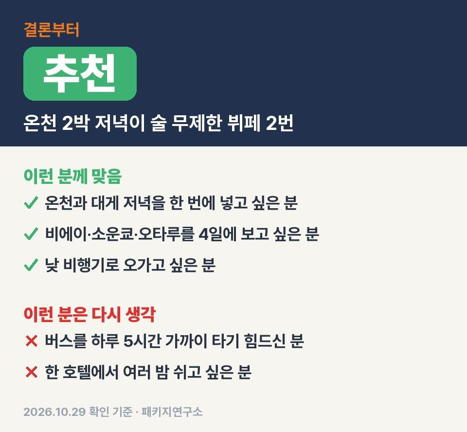
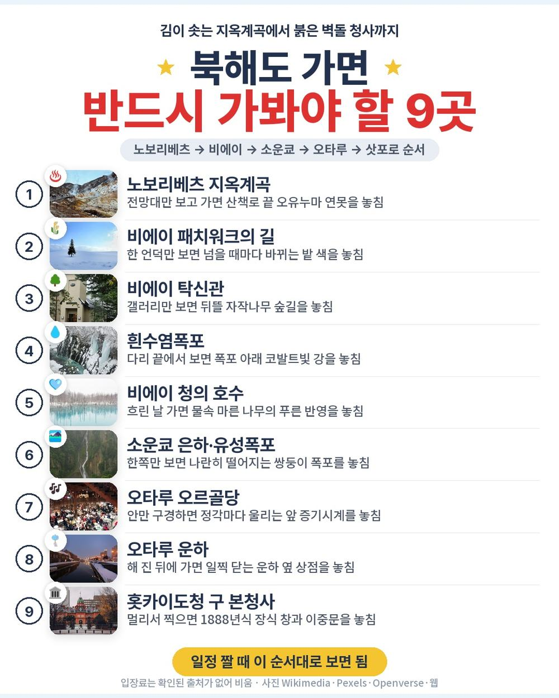
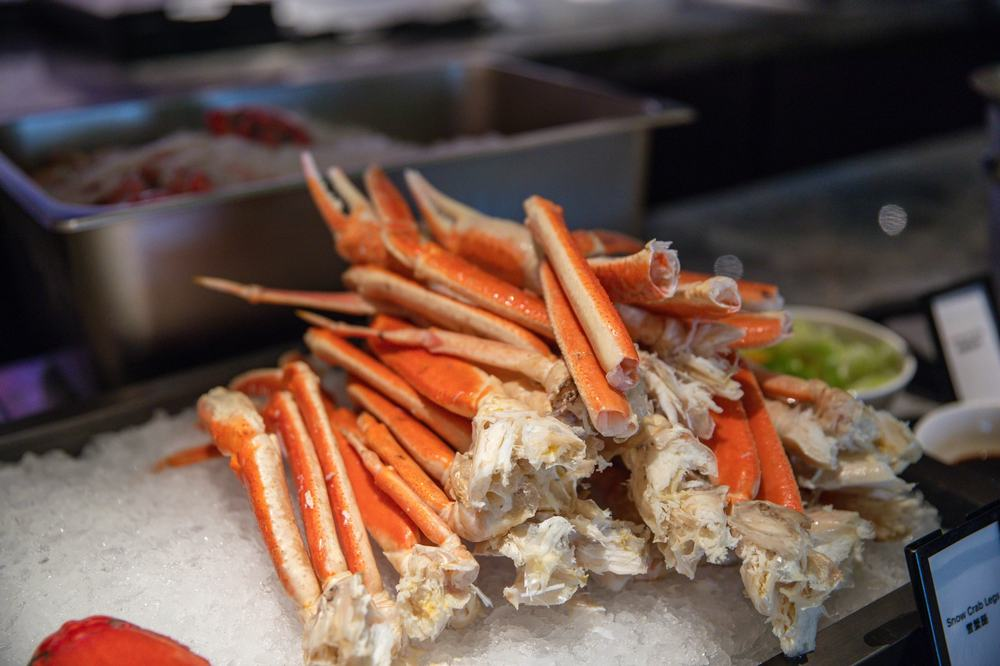
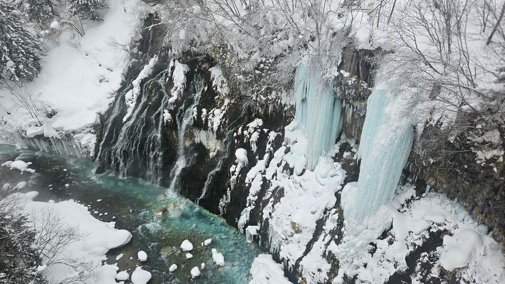
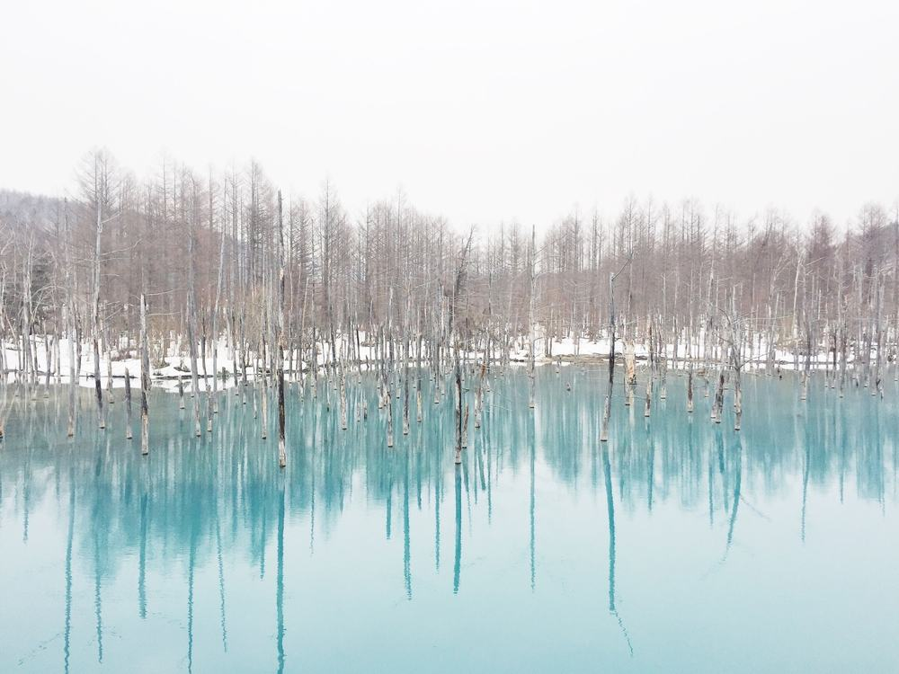

북해도 패키지 여행 3박 4일 노랑풍선 114만 9천원, 노보리베츠 대게 뷔페에 술 무제한 저녁 두 번 든 온천 일정
부모님 북해도 온천 보내드리려고 패키지 뒤지다가, 온천 호텔 저녁이 두 번 다 술 무제한이라는 상품이 걸려서 원문을 끝까지 읽어 봤음.
직접 다녀온 후기는 아니고 노랑풍선 일정표랑 포함·불포함 원문을 하나씩 따져 본 글이라 그 점은 감안하고 보시면 됨.
결론 — 추천. 100만원대 초반 값에 온천 호텔 두 밤, 대게 뷔페, 술 무제한 저녁 두 번까지 들어 있음. 다만 버스를 하루 5시간 가까이 타기 힘드신 분은 맞지 않음.

오늘 기준 출발일별 요금 보기
https://package-researcher.github.io/d/hokkaido.html?s=art

| 항목 | 내용 |
|---|---|
| 가격 | 1인 1,149,000원 (성인 · 11월 출발 기준) · 2인 2,298,000원 |
| 여행사 | 노랑풍선 |
| 항공 | 제주항공 직항 (7C1503·7C1504) · 인천 12:25 → 신치토세 15:00 / 신치토세 16:00 → 인천 19:25 |
| 숙소 | 온천 호텔 2박(노보리베츠 파크 호텔 미야비테이 · 소운쿄 다이세츠 호텔 예정) + 삿포로 시내 1박(삿포로 그랜드 또는 삿포로 파크 호텔 예정) |
| 일정 | 3박 4일 · 버스 · 한국어 가이드 · 선택관광 없음 · 쇼핑 1회 · 가이드·기사 경비 1인 4,000엔 별도 |
▶ 내 출발일 오늘 기준 요금 확인 (제휴 링크 · 예약 시 수수료를 받으며 가격은 같습니다)
▶ 10월 29일 기준 북해도 패키지 최저 89만 1천원부터 — 출발일별 값 한 화면에: 비교 페이지
| 번호 | 내용 | 한 줄 답 |
|---|---|---|
| 1 | 이 값에 들어 있는 것 | 온천 2박 · 식사 9회 |
| 2 | 현장에서 더 낼 돈 | 2인 약 6만 7천원 |
| 3 | 일정과 체력 | 2일차가 제일 김 |
| 4 | 자유여행으로 짜면 | 1인 약 97만 5천원 |
| 5 | 맞는 분 · 안 맞는 분 | 버스 괜찮은 분 |
1. 이 값에 들어 있는 것

처음엔 100만원 넘는 북해도 패키지면 다 비슷하겠지 싶었음.
근데 이 상품은 저녁 쪽이 좀 다름. 온천 호텔 두 곳 저녁이 둘 다 호텔 뷔페고 두 번 다 술이 무제한(노미호다이)임.
- 1일차 노보리베츠 호텔 뷔페: 대게 포함 + 술 무제한
- 2일차 소운쿄 호텔 뷔페: 술 무제한
- 3일차 저녁: 현지식
- 예약자 특전: 시로이 코이비토 방마다 1개, 천연 입욕제·오타루 슈크림빵 한 분에 1개씩
여기에 왕복 항공권, 호텔 3박, 식사 9회, 여행자보험, 한국어 가이드, 전용 버스가 기본으로 붙음.
온천 두 밤의 저녁이 둘 다 술 무제한 뷔페라는 게 이 상품에서 제일 큰 차이.
선택관광은 0개고 쇼핑은 마지막 날 삿포로 잡화 면세점 한 번(약 40분)뿐. 사는 건 자유.

호텔은 출발 2일 전에 확정해서 알려 줌. 온천 호텔 방은 침대방이랑 다다미방 중 임의 배정이라 고를 수 없음.
대욕장은 남녀가 나뉘고 수영복은 못 입음. 혼자 방을 쓰면 싱글룸 30만원이 붙음.
2. 현장에서 더 낼 돈
| 항목 | 금액 | 비고 |
|---|---|---|
| 가이드·기사 경비 | 8,000엔 | 1인 4,000엔 × 2명 |
| 선택관광 | 0원 | 없음 |
| 1일차 점심 | 사 먹는 만큼 | 공항에서 각자 |
| 4일차 저녁 | 사 먹는 만큼 | 19:25 인천 도착 |
| 혼자 쓰는 방 | 300,000원 | 1인 예약일 때만 |
| 합계 (2인) | 8,000엔 (약 6만 7천원) | 상품가 2인 2,298,000원 + 경비 |
두 분이면 상품가 229만 8천원에 경비 8,000엔, 100엔 841원으로 치면 약 6만 7천원.
합쳐서 두 분 약 236만 5천원, 한 분에 약 118만 3천원이 실제로 드는 돈.
엔화는 경비 낼 만큼만 미리 바꿔 가시면 됨.
3. 일정과 체력

| 일차 | 가는 곳 | 버스 | 걷기 | 점심 · 저녁 |
|---|---|---|---|---|
| DAY 1 | 12:25 인천 출발 → 15:00 신치토세 → 노보리베츠 지옥계곡 → 온천 호텔 | 약 1.5시간 | 적음 | 없음 · 호텔 뷔페(대게) |
| DAY 2 | 후라노 와인 공장 → 패치워크의 길(차창) → 탁신관 → 흰수염폭포 → 청의 호수 → 소운쿄 온천 | 약 5시간 | 보통 | 현지식 · 호텔 뷔페 |
| DAY 3 | 은하·유성폭포 → 오타루 오르골당·기타이치가라스·운하 → 삿포로 오도리 공원 | 약 4시간 | 보통 | 현지식 · 현지식 |
| DAY 4 | 면세점 → 구 본청사(외관) → 홋카이도 신궁 → 16:00 신치토세 출발 → 19:25 인천 | 약 1.5시간 | 적음 | 현지식 · 없음 |
부모님 체력은 둘째 날만 보면 됨.
노보리베츠에서 후라노까지 2시간 45분, 비에이까지 30분, 소운쿄까지 1시간 40분. 버스만 다섯 시간 가까이임.
그래도 중간에 와인 공장, 탁신관, 흰수염폭포, 청의 호수에서 계속 내렸다 타는 구조라 한 번에 오래 앉아 있진 않음.
지옥계곡 산책로는 약 15분 코스인데 나무 데크가 젖으면 미끄럽다는 얘기가 많음. 운동화 신고 가시는 게 편함.
북해도는 한국보다 평균 4~5도 낮다고 원문에 적혀 있음. 흰수염폭포는 다리 위에서 보는데 바람이 세니까 두꺼운 겉옷은 꼭 챙기셔야 함.

이 상품 조건 한눈에 (출발일 달력·두 분 값·비슷한 상품과 비교)
https://pkg-lab.com/pkg/JHP12287C05/?utm_source=ghpages&utm_medium=post&utm_campaign=daily
같은 목적지 다른 여행사 패키지, 쇼핑·선택관광·가이드 경비까지 비교
https://pkg-lab.com/dest/SPK/m/2026-11/?utm_source=ghpages&utm_medium=post&utm_campaign=daily
4. 자유여행으로 짜면
| 항목 | 금액 | 근거 |
|---|---|---|
| 인천–신치토세 왕복 항공 | 465,000원 | ICN↔CTS 직항 왕복 1인 (패키지와 같은 출발일 · 2026-10-29 마이리얼트립 조회) |
| 온천 호텔 2박(석식 포함) + 시내 1박 | 300,000원 | 2인 1실 1인분 (추정) |
| 식사 (점심 3 · 저녁 1) | 45,000원 | 현지식 기준 (추정) |
| 공항 이동 · 차량 | 150,000원 | 렌터카 4일·기름값 2인 나눔 (추정) |
| 여행자보험 · 유심 | 15,000원 | 4일 기준 (추정) |
| 가이드 | — | 자유여행은 없음 |
| 합계 | 약 975,000원 |
항공권만 1인 46만 5천원이라, 패키지 값에서 빼면 68만 4천원이 남음.
직접 짜면 1인 약 97만 5천원, 패키지는 경비 더해서 약 118만 3천원.
패키지가 21만원쯤 더 드는 셈인데, 그 차이에 한국어 가이드랑 기사, 나흘 내내 움직이는 버스, 술 무제한 저녁 두 번이 들어 있음.
노보리베츠에서 비에이, 소운쿄, 오타루까지 하루에 몇 시간씩 가는 길이라 직접 가면 렌터카를 몰아야 함.
11월 북해도 산길을 부모님 모시고 직접 운전하는 게 부담이면 패키지 쪽이 은근 편함.
5. 맞는 분 · 안 맞는 분
| 맞는 분 | 안 맞는 분 |
|---|---|
| 온천과 대게 저녁을 한 번에 넣고 싶은 분 | 버스를 하루 5시간 가까이 타기 힘드신 분 |
| 비에이·소운쿄·오타루·삿포로를 4일에 보고 싶은 분 | 한 호텔에서 여러 밤 쉬고 싶은 분 |
| 낮 비행기로 오가고 싶은 분 | 현지 경비를 따로 내기 싫은 분 |
온천 두 밤에 술 무제한 저녁 두 번이면, 부모님 모시고 가기엔 꽤 잘 짜인 편.
반대로 한곳에 오래 머물며 쉬는 여행을 원하시면 이 상품은 고르시면 안 됨. 매일 호텔을 옮기는 일정이라.
자주 묻는 질문
Q. 북해도 패키지 가격에 가이드 경비도 들어 있나요?
A. 안 들어 있음. 가이드·기사 경비 1인 4,000엔을 현지에서 냄. 성인·소아 같음.
Q. 북해도 패키지 쇼핑은 몇 번 가나요?
A. 한 번. 마지막 날 삿포로 잡화 면세점에 약 40분. 구매는 자유.
Q. 온천 호텔에서 수영복 입어도 되나요?
A. 안 됨. 대욕장이랑 온천 시설은 남녀가 나뉘어 있고 수영복은 못 입음.
마무리
결국 노보리베츠랑 소운쿄 온천 두 밤에, 그 두 밤 저녁을 술 무제한 뷔페로 묶은 일정.
둘째 날 버스만 괜찮으시면 비에이부터 오타루까지 한 번에 다 도는 상품이라고 봄.
출발일마다 값이 달라서 가시려는 날짜 요금부터 확인해 보시면 됨.
오늘 기준 출발일별 요금 보기
https://package-researcher.github.io/d/hokkaido.html?s=art
이 글에는 네이버 제휴 링크가 포함되어 있으며, 링크를 통해 예약하시면 일정 수수료를 받습니다. 가격은 동일합니다. 가격과 구성은 2026년 10월 29일 확인 기준이며 출발일에 따라 달라질 수 있습니다.
▶ 이 상품, 영상으로 보기 (유튜브)
▶ 북해도 패키지 오늘 값 나란히 비교
▶ 같은 목적지 다른 여행사 패키지, 쇼핑·선택관광·가이드 경비까지 비교: pkg-lab.com
사진 출처 (저작자 · 라이선스):
그 밖의 사진: Pexels
쇼츠·클립 영상과 사진:
Jigokudani (Hell Valley), Noboribetsu Onsen, Hokkaido, April — CC BY-SA 4.0 (Wikimedia Commons) 원본
,_Noboribetsu_Onsen,_Hokkaido,_April_2023_02.jpg){kind=link}
Oyunuma Pond, Noboribetsu Onsen, Hokkaido, April 2023 01 — CC BY-SA 4.0 (Wikimedia Commons) 원본

Keren Banget Air terjun Shirahige Waterfall at Hok — RONNY NAWA (YouTube, CC BY) 원본
拓真館 Takeshinkan Photo Gallery Hokkaido - panoramio — CC BY 3.0 (Wikimedia Commons) 원본

Ginga Waterfall during rainstorm — CC BY-SA 4.0 (Wikimedia Commons) 원본